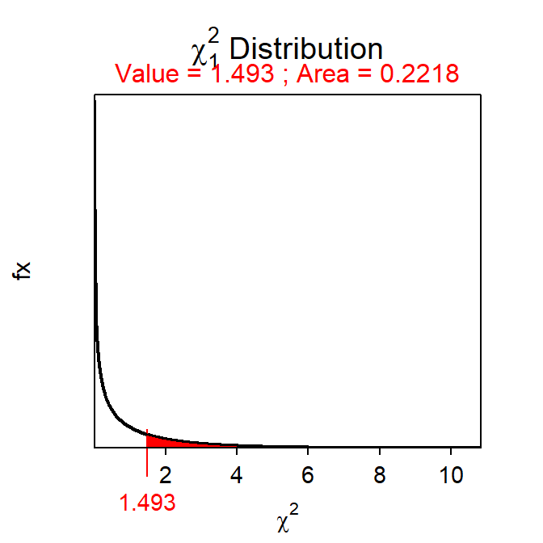

Module 21 Goodness-of-Fit Test
It is common to determine if the frequency of individuals in the levels of a categorical response variable follow frequencies suggested by a particular theory or distribution. The simplest of these situations occurs when a researcher is making a hypothesis about the percentage or proportion of individuals in one of two categories. The “distribution” of individuals in two categories comes from the proportion in the hypothesis for one category and one minus the proportion in the hypothesis for the other category. In situations with more than two levels, the “distribution” of individuals into the categories likely comes from the hypothesis that a particular theoretical distribution holds true. For example, a researcher may want to determine if frequencies predicted from a certain genetic theory are upheld by the observed frequencies found in a breeding experiment, if the frequency that a certain animal uses habitats is in proportion to the availability of those habitats, or if the frequency of consumers that show a preference for a certain product (over other comparable products) is non-random.
In each of these cases, the theoretical distribution articulated in the research hypothesis must be converted to statistical hypotheses that will then be used to generate expected frequencies for each level. These expected frequencies will then be statistically compared to the observed frequencies to determine if the theoretical distribution represented in the null hypothesis is supported by the data. The method used for comparing the observed to expected frequencies, where the expected frequencies come from a hypothesized theoretical distribution, is a Goodness-of-Fit Test, the subject of this module.
21.1 Goodness-of-Fit Test Specifics
21.1.1 The Hypotheses
A Goodness-of-Fit Test is used when a single categorical variable has been recorded and the frequency of individuals in the levels of this variable are to be compared to a theoretical distribution. In its most general form the statistical hypotheses for the Goodness-of-Fit Test will be “wordy,” relating whether the “distribution” of individuals into the levels of the response variable follows a specific theoretical distribution or not. The null hypothesis will generally be like H0:“the distribution of individuals into the levels follows the ‘theoretical distribution’,” where ‘theoretical distribution’ will likely be replaced with more specific language. For example, the research hypothesis that states that “50% of students at Northland are from Wisconsin, 25% are from neighboring states, and 25% are from other states” would be converted to H0:“the proportion of students from Wisconsin, neighboring states, and other states is 0.50, 0.25, and 0.25, respectively” with an HA:“the proportion of students from Wisconsin, neighboring states, and other states is NOT 0.50, 0.25, and 0.25, respectively.”
The hypotheses are simpler, but you must be more careful, when there are only two levels of the response variable. For example, a research hypothesis of “less than 40% of new-born bear cubs are female” would be converted to H0:“the proportion of bear cubs that are female and male is 0.40 and 0.60, respectively” with an HA:“the proportion of bear cubs that are female and male is NOT 0.40 and 0.60, respectively.” However, these hypotheses are often simplified to focus on only one level as the other level is implied by subtraction from one. Thus, these hypotheses are more likely to be written as H0:“the proportion of bear cubs that are female is 0.40” with an HA:“the proportion of bear cubs that are female is NOT 0.40.”
One may also have expected, from the wording of the research hypothesis about the sex of bear cubs, that the alternative hypothesis would have been HA:“the proportion of bear cubs that are female is LESS THAN 0.40.” Recall from Section 20.1, however, that the chi-square test statistic always represents a two-tailed situation. Thus, the H0 here reflects that constraint. The researcher will ultimately be able to determine if the proportion is less than 0.40 if the p-value from the Goodness-of-Fit Test indicates a difference and the observed proportion of female bear cubs is less than 0.40.
21.1.2 The Tables
For a Goodness-of-Fit Test, the data are summarized in an observed frequency table as in Module 4. Additionally, a table of expected frequencies must be constructed from the theoretical distribution in the null hypothesis and the total number of observed individuals (n). Specifically, the expected frequencies are found by multiplying the expected proportions from the theoretical distribution in the null hypothesis by n. For example, consider this situation:
Bath and Buchanan (1989) surveyed residents of Wyoming by distributing a mailing to random residents and collecting voluntarily returned surveys. One question asked of the respondents was, “Do you strongly agree, agree, neither agree or disagree, disagree, or strongly disagree with this statement? – ‘Wolves would have a significant impact on big game hunting opportunities near Yellowstone National Park.’” The researchers hypothesized that more than 50% of Wyoming residents would either disagree or strongly disagree with the statement. Of the 371 residents that returned the survey, 153 disagreed and 43 strongly disagreed with the statement.
At first glance it may seem that this variable has five levels – i.e., the levels of agreement offered in the actual survey. However, the researcher’s hypothesis collapsed the results of the survey question into two levels: (1) strongly disagree or disagree combined and (2) all other responses. Thus, the statistical hypotheses for this situation are H0:“the proportion of respondents that disagreed or strongly disagreed is 0.50” and HA:“the proportion of respondents that disagreed or strongly disagreed is NOT 0.50.”
The expected frequencies in each level are derived from the total number of individuals examined and the specific null hypothesis. For example, if the null hypothesis is true, then 50% of the 371 respondents would be expected to disagree or strongly disagree with the statement. In other words, 371×0.50=185.5 individuals would be expected to disagree or strongly disagree. Furthermore, the other 50%, or 371×(1-0.50)=185.5 would be expected to “not” disagree or strongly disagree. These expectations are summarized in Table 21.1.
| Category | Expected | Observed |
|---|---|---|
| Disagree | 185.5 | 196 |
| Not Disagree | 185.5 | 175 |
| Sum | 371.0 | 371 |
The expected table should maintain at least one decimal in each cell even though the values represent frequencies.
Consider the following situation where construction of expected frequencies is bit more complex.
Mendel’s law of independent assortment predicts that the phenotypes (i.e., how they look) of the offspring from mating the offspring of a dihybrid cross of homozygous dominant and homozygous recessive parents should follow a 9:3:3:1 ratio. In an experiment to test this, Mendel crossed a pea plant that produces round, yellow seeds (i.e., all dominant alleles, YYWW) with a pea plant that produces green, wrinkled seeds (i.e., all recessive alleles, yyww) such that only round, yellow heterozygous offspring (i.e., YyWw) were produced. Pairs of these offspring were then bred. Mendel’s theory says that \(\frac{9}{16}\) of these offspring should be round, yellow; \(\frac{3}{16}\) should be round, green; \(\frac{3}{16}\) should be wrinkled, yellow; and \(\frac{1}{16}\) should be wrinkled, green. Of 566 seeds studied in this experiment, Mendel found that 315 were round, yellow; 108 were round, green; 101 were wrinkled, yellow; and 32 were wrinkled, green. Use these results to determine, at the 5% level, if Mendel’s law of independent assortment is supported by these results.
The statistical hypotheses are as follows,
- H0:“the proportion of RY, RG, WY, and WG individuals will be \(\frac{9}{16}\), \(\frac{3}{16}\), \(\frac{3}{16}\), and \(\frac{1}{16}\), respectively”
- HA:“the proportion of RY, RG, WY, and WG individuals will NOT be \(\frac{9}{16}\), \(\frac{3}{16}\), \(\frac{3}{16}\), and \(\frac{1}{16}\), respectively”
where RY=“round, yellow,” RG=“round, green,” WY=“wrinkled, yellow,” and WG=“wrinkled, green.” If these proportions are applied to the n=566 observed offspring, then the following frequencies for each phenotype would be expected:
- \(\frac{9}{16}\)×566 = 318.375 would be expected to be round, yellow.
- \(\frac{3}{16}\)×566 = 106.125 would be expected to be round, green.
- \(\frac{3}{16}\)×566 = 106.125 would be expected to be wrinkled, yellow.
- \(\frac{1}{16}\)×566 = 35.375 would be expected to be wrinkled, green.
These expected frequencies are summarized in Table 21.2.
| Category | Expected | Observed |
|---|---|---|
| round, yellow | 318.375 | 314 |
| round, green | 106.125 | 108 |
| wrinkled, yellow | 106.125 | 101 |
| wrinkled, green | 35.375 | 32 |
| Sum | 566.000 | 566 |
The hypothesis test method developed in the following sections will be used to determine if the differences between the expected and observed frequencies is “large” enough to suggest that the observed frequencies do not support the distribution represented in the null hypothesis.
21.1.3 Specifics
The Goodness-of-Fit Test is characterized by a single categorical response variable. The hypotheses tested usually cannot be converted to mathematical symbols and are thus “wordy.” Specifics of the Goodness-of-Fit Test are below.
- Hypotheses: H0: “the observed distribution of individuals into the levels follows the `theoretical distribution’” vs HA: “the observed distribution of individuals into the levels DOES NOT follow the ‘theoretical distribution.’”
- Statistic: Observed frequency table.
- Test Statistic: \(\chi^{2} = \sum_{cells}\frac{(Observed-Expected)^{2}}{Expected}\)
- df: Number of levels minus 1.
- Assumptions: Expected value in each level is ≥5.
- Confidence Interval (for one level): \(\hat{p} \pm Z^{*}\sqrt{\frac{\hat{p}(1-\hat{p})}{n}}\)
- Use with: Categorical response, one group (or population), comparing to a theoretical distribution.
It is cumbersome to produce a confidence interval in a Goodness-of-Fit Test because there generally is not a single parameter (i.e., there are as many parameters as levels in the response variable). Confidence intervals can be calculated for the proportions in each level as shown below. However, confidence intervals will only be “hand”-calculated when there are two levels. When using R (as discussed in a later module), confidence intervals will be computed for all levels, no matter the number of levels.
Let \(p\) be the population proportion in a particular level and \(\hat{p}\) be the sample proportion in the same interval. The \(\hat{p}\) is computed by dividing the frequency of individuals in this level by the total number of individuals in the sample (i.e., n). The \(\hat{p}\) is a statistic that is subject to sampling variable with that sampling variability measured by \(SE_{\hat{p}}=\sqrt{\frac{\hat{p}(1-\hat{p})}{n}}\) for “large” values of n. For “large” values of n the \(\hat{p}\) will follow a normal distribution such that a confidence interval for \(p\) is computed using the general confidence interval formula found in Section 15.2 and repeated below:
\[ \text{"Statistic"} + \text{"scaling factor"} * SE_{statistic} \]
where the scaling factor is the familiar Z*. Thus, the confidence interval for \(p\) is constructed with
\[ \hat{p} \pm Z^{*}\sqrt{\frac{\hat{p}(1-\hat{p})}{n}} \]
Note that one does not need to worry about lower and upper bounds, only confidence intervals will be computed, because of the two-tailed nature of the chi-square test statistic.
In the Wyoming survey example, the proportion of respondents in the sample that either disagreed or strongly disagreed was \(\hat{p}\)=\(\frac{196}{371}\)=0.528. The standard error for this sample proportion is \(\sqrt{\frac{0.528(1-0.528)}{371}}\)=0.026. For a 95% confidence interval, Z*=±1.960.74 Thus, the confidence interval is 0.528±1.960×0.026 or 0.528±0.051 or (0.477,0.579). Therefore, one is 95% confident that the population proportion that either disagreed or strongly disagreed is between 0.477 and 0.579. Because there are only two levels in this example it can also be said with 95% confidence that the population proportion that did not either disagree or strongly disagree is between 0.421 and 0.523.
21.2 Examples
21.2.1 $1 Coins
Below are the 11-steps (Section 17.1) for completing a full hypothesis test for the following situation:
USA Today (June 14, 1995) reported that 77% of the population opposes replacing $1 bills with $1 coins. To test if this claim holds true for the residents of Ashland a student selected a sample of 80 Ashland residents and found that 54 were opposed to replacing the bills with coins. Develop a hypothesis test (at the 10% level) to determine if the proportion of Ashland residents that are opposed to replacing bills with coins is different from the proportion opposed for the general population.
- α=0.10.
- H0:“the proportion of Ashland residents that oppose replacing the $1 bill with the $1 coin is 0.77” vs. HA: “The proportion of Ashland residents that oppose replacing the $1 bill with the $1 coin is NOT 0.77.”
- A Goodness-of-Fit Test is required because …
- a single categorical variable was recorded (opinion about $1 coin),
- a single group (or population) was considered (Ashland residents), and
- the frequency of responses is being compared to a hypothesized distribution in the null hypothesis.
- The data appear to be part of an observational study with no clear indication of random selection of individuals.
- The expected number in the “oppose” level is 80×0.77=61.6. The expected number in the “do not oppose” category is 80×0.23=18.4. These expectations are shown in the table in the next step. The assumption of more than five individual in all cells of the expected table has been met.
- The observed table is shown below (along with the expected table).
| Level | Expected | Observed |
|---|---|---|
| Oppose | 61.6 | 54 |
| Do Not Oppose | 18.4 | 26 |
| Sum | 80.0 | 80 |
- χ2=\(\frac{(61.6-54)^{2}}{55} + \frac{(18.4-26)^{2}}{25}\)=0.938 + 3.139 = 4.077 with 2-1=1 df.
- p-value=0.0435.
- H0 is rejected because the p-value<α=0.10.
- The proportion of Ashland residents that oppose replacing the $1 bill with the $1 coin does appear to be different from the proportion (0.77) reported for the general population.
- I am 90% confident that the proportion of all Ashland residents opposed to the $1 coin is between 0.596 and 0.767 [i.e., \(\frac{54}{80}\pm1.645\times\sqrt{\frac{0.68125*0.31875}{80}}\)=\(0.68125\pm1.645\times0.0521\)=0.68125±0.0857=(0.5956,0.7670).]
R Appendix:
( distrib(4.077,distrib="chisq",df=1,lower.tail=FALSE) )
( distrib(0.95,type="q") )
This Z* is computed with
distrib(0.975,type="q").↩︎